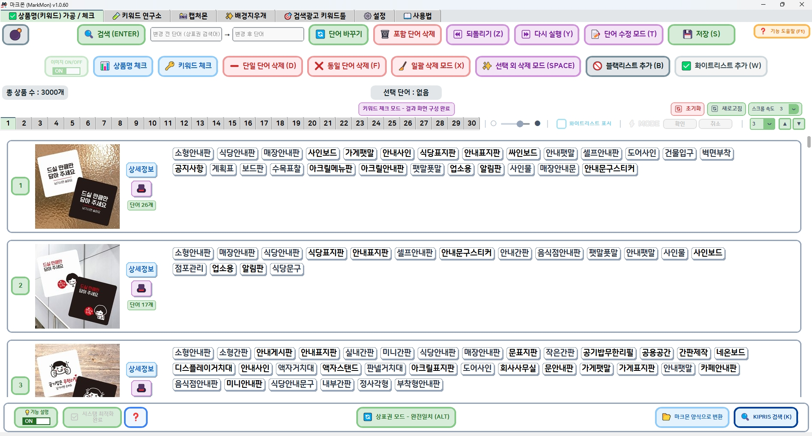

SELLER'S ALL-IN-ONE WORKSPACE
확인하고,다듬고,완성하다.
상품 등록 전에 필요한 상표 확인,
키워드 정리와 이미지 편집을 한곳에서.
SELLER'S TRADEMARK WORKSPACE
상품 등록 전 검수,
마크몬 하나면 끝.
최대 3,000개 상품명·키워드의 상표 후보를 한 번에 확인할 수 있습니다.
확인이 필요한 단어를 수정하고, 키워드 검색량 확인과 이미지 편집 기능도 이용해 보세요.
01 WHY MARKMON
터진 뒤엔
이미 늦습니다.
타인의 등록상표를 상품명이나 키워드에 무단으로 사용하면 지재권 분쟁으로 이어질 수 있습니다.
상품이 팔린 뒤 발견할수록 손실과 대응 부담이 커질 수 있습니다.

상품을 등록하기 전에 상표부터 확인해 보세요.
02 ONE CONNECTED WORKSPACE
대량으로 확인하고,
필요한 정보까지 바로 살펴보세요.
엑셀을 불러와 최대 3,000행을 한 번에 점검하고, 완전일치와 부분일치를 나눠 보세요. 상표 후보를 선택하면 출원인·상품분류·등록일·법적 상태 같은 상세 정보도 간편하게 확인할 수 있습니다.

03 CORE TOOLS
FOUR TOOLS · ONE WORKFLOW
상품명과 키워드,
이미지 작업을 더 빠르게 끝내세요.
키워드 정리부터 이미지 편집까지, 필요한 기능을 한눈에 살펴보고 궁금한 내용은 자세히 확인해 보세요.
04 BEFORE YOU START
사용하기 전에,
궁금한 것부터 확인하세요.
엑셀 준비부터 상표 확인, 키워드와 이미지 작업까지 실제 사용 전에 많이 묻는 내용을 모았습니다.
01기존에 사용하던 엑셀도 불러올 수 있나요?
기존 판매처 양식이나 개인 엑셀은 프로그램의 ‘마크몬 양식으로 변환’ 기능을 통해 새로운 마크몬 양식으로 간단히 만들 수 있습니다.
02상품이 많아도 한 번에 확인할 수 있나요?
네. 마크몬 양식의 상품명과 키워드를 최대 3,000행까지 한 번에 불러와 점검할 수 있습니다.
03내 엑셀 파일이 외부 서버로 전송되나요?
절대 아닙니다. 상품 엑셀의 가공과 이미지 편집 결과는 사용자 PC에서 처리·저장됩니다.
04불필요한 키워드를 한 번에 삭제할 수 있나요?
네. 한 번에 삭제할 수도 있고, 하나씩 삭제할 수도 있습니다.
05검색량을 기준으로 키워드를 고를 수 있나요?
네. 검색량을 비교하거나 최소 검색량 조건을 적용해 필요한 키워드를 선별할 수 있습니다.
06프로그램 사용 중 문제가 생기면 어디로 문의하나요?
홈페이지 하단의 고객문의 또는 프로그램 안에 안내된 마크몬 단톡방에서 문의할 수 있습니다.
05 START TODAY
놓치기 쉬운 위험,
마크몬으로 지금 확인하세요.
상품명·키워드 점검부터 이미지 편집까지 마크몬의 기능을 직접 이용해 보세요.
Windows용 마크몬을 설치하고 지금 바로 무료로 시작해 보세요.마크몬을 지금 바로 무료로 시작해 보세요.
설치는 Windows PC에서 진행해 주세요.
Release v1.0.61 · Windows 10/11 64-bit
모바일에서는 다운로드할 수 없습니다
지금 바로 무료로 시작
₩ 0 마크몬의 기능을 먼저 무료로 이용해 보세요.- 대량 상품명·키워드 검사
- 공개 상표 데이터 기반 점검
- 키워드 마법사와 키워드 연구소의 모든 기능
- 캡처몬 · 배경지우개